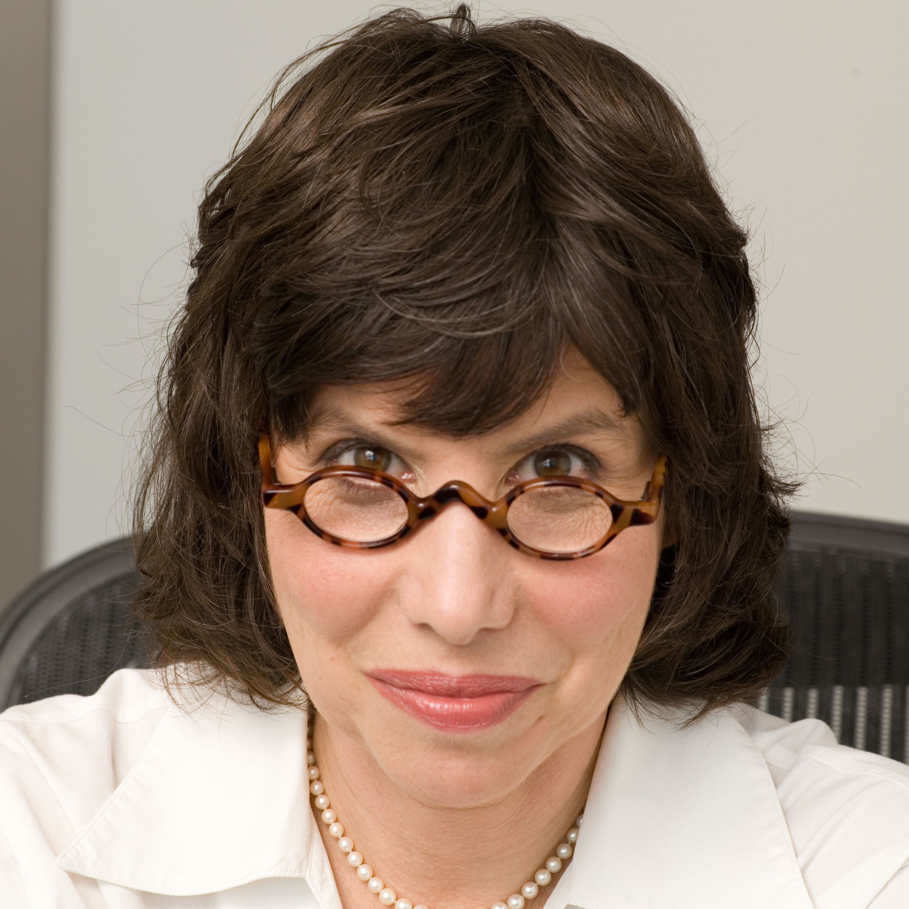
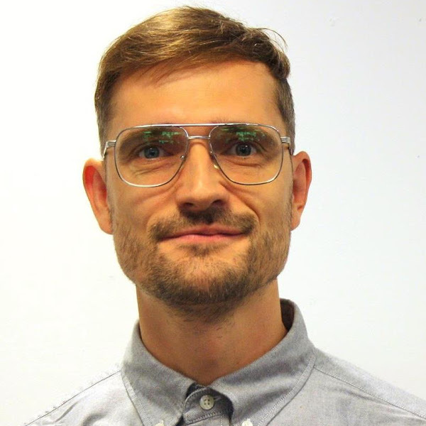

<div class="row">
<h3>Invited Speakers</h3>
<table class="table">
  <tbody>
    <tr>
      <td></td>
      <td><b><a href="https://www.is.mpg.de/~bs">Bernhard Schölkopf </a></b> scientific interests are in machine learning and causal inference. He has applied his methods to a number of different fields, ranging from biomedical problems to computational photography and astronomy. Bernhard has researched at AT&T Bell Labs, at GMD FIRST, Berlin, and at Microsoft Research Cambridge, UK, before becoming a Max Planck director in 2001. He is a member of the German Academy of Sciences (Leopoldina) and a Fellow of the ACM.</td>
    </tr>
    <tr>
      <td></td>
      <td><b><a href="https://people.csail.mit.edu/lpk/"> Yoshua Bengio </a></b> is a  professor in the Department of Computer Science and Operational Research at the Université de Montréal. He is also Scientific Director of Mila, Scientific director of IVADO and Canada Research Chair in Statistical Learning Algorithms. In 2019, he receives the ACM A.M. Turing Prize, considered the “Nobel Prize of Computer Science” along with Geoffrey Hinton and Yann LeCun for their advances in conceptual foundations and engineering that have made deep neural networks an essential component of computer science.
His main research ambition is to understand principles of learning that yield intelligence. supervises a large group of graduate students and post-docs.</td>
    </tr>
    <tr>
      <td></td>
      <td><b><a href="https://researcher.watson.ibm.com/researcher/view.php?person=ibm-Sara.Magliacane"> Sara Magliacane </a></b> have worked in various fields of Computer Science research, from databases, to Semantic web, distributed systems and machine learning. She just finished a PhD degree on the topic of causality and probabilistic logics at the VU University Amsterdam and the University of Amsterdam. 
    </tr>
    <tr>
      <td></td>
      <td><b><a href="http://alisongopnik.com/">Alison Gopnik</a></b> is a professor of psychology and affiliate professor of philosophy at the University of California at Berkeley.  She is a world leader in cognitive science, particularly the study of children’s learning and development. Alison is especially interested in how children learn about the causal structure of the world—how some things make other things happen. Her lab explores how children learn by observing statistical patterns, doing experiments and watching the experiments of others.</td>
    </tr>
    <tr>
      <td></td>
      <td><b><a href="https://scholar.google.co.uk/citations?user=1h_mxPMAAAAJ&hl=en">  Lars Buesing </a></b> 
   </td>    
   </tr>
  </tbody>
</table>
</div>

/div>
